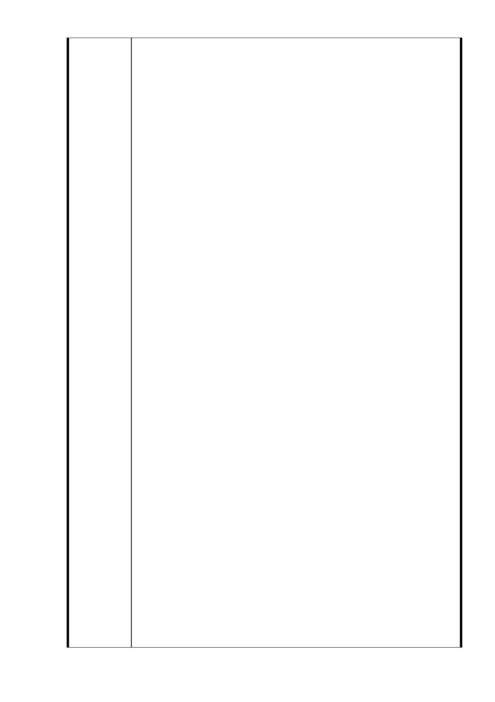

已開了很多會，也提同樣的問題，覺得很累！
但有關單位都不提地層危險地帶的安全措施，坦白的報告，懇請
多位資深地質、地震專家一起重視，鑽探、調查震波的頻率是低
頻、還是全頻？還是…
民國 99 年 6 月 11 日星期五，午後在家，房屋突震動厲害，
以為是地震，親友說：沒有，到附近勘查結果：是柏德開發公司
在廣慈院內做拆除舊建築地上物的動作，只拆地上一、二、三層
就搖震得這麼厲害，本人住家又離現場有段距離，又過了馬路，
為何會促使家的建物振動如此厲害（真的！）心有餘悸，可能是
地下深地層受震波影響。
我是快 70 歲的歐巴桑，怕房屋傾斜、龜裂，真得怕怕，讓
我好好安全過晚年吧！
希望不建商業大樓，廣慈院內以老人活動中心、公園為主，
讓廣慈的愛延伸，不要錢讓財團賺，苦讓市民擔。
市府計畫在廣慈建 30 幾層大樓很突兀，附近有建那麼高嗎
？有沒有看地層原始資料，不危險嗎？蓋 30 幾層商業大樓，戶
戶陽光充足、視野好，綠色公園是大樓的景觀，但林口街 80 巷
附近居民就礙景觀。
公園早上老人 6-8 點團體活動最多，下午 3-4 點堆人在院區
周圍競走，是運動的好地方，但蓋了商業大樓現公園使用面積還
要縮小，早上在公園裡活動沒有日照權（包括植物），視野變窄
，看到的只是僵硬的水泥大樓，又吸到大樓空調的髒空氣，飯店
排出的油煙，公園快變防火巷，綠地變商業大樓的腹地，現使用
的公園又是斷層最嚴重的地方，這樣的開發對居民是減分，我們
要做二等公民嗎？現老人越來越多，多為我們老人想，並不要以
公家傳統方式，一定要蓋大樓讓財團賺大錢。
國外都市美，是因公園綠地多，但北市公園綠地取得不易，
更要保留珍惜，廣慈院區裡比大安森林公園還森林自然，所以保
留綠地公園，使用面積越大越好，商業大樓在信義商圈已很大塊
了，如誠品、新光百貨、電影院…，年輕人多嚮往。
我們廣慈院區內這塊綠地公園是讓老人有去處，在自然環境
的空間裡，緩慢活動為主。家母現年 88 歲，也曾在院區內學陶
瓷，家裡也留下她的精心傑作，也常提起老師、同學得快樂時光
。有朋友以前工作忙，也把她媽媽早上帶到廣慈安親班，下班帶
回，放心不少。謝謝社會局的福利。
現在年輕人忙，老人又越來越多，希望：廣慈把老人活動放
大利用價值，少商業。
◎只要不興建商業大樓一切都 OK。
1. 停車位更多。
2. 公園區內就有日照權（包括植物），就不會擋視野礙景觀
。
3. 廣慈院周圍馬路就可加寬 2 倍（原來的 2 倍）（因有捷運
出入口，汽車出入口）
- 35 -